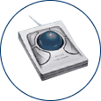

Index
This list is for reference purposes only and does not reflect endorsement by the IDRC.
Description
Alternative pointing devices are used to replace the mouse.
The keyboard keypad can function as a mouse using Mousekeys. Many of the alternative keyboards have Mousekeys built in, so the keys on the keyboard can toggle between text input or mouse input.
A Trackball separates the movement of the pointer from the mouse clicks, especially useful for those who have less fine motor control and for those who find a sustained grip on the traditional mouse uncomfortable. Many trackballs offer the left and right mouse buttons plus one or two more which can be programmed to be a double click or 'click and drag' functions. Many local computer vendors stock trackballs--the programmable ones are also available from assistive technology vendors.
For those unable to use a traditional mouse or trackball, one to 5 switches may be programmed to allow the user to move the pointer and 'click'.
Finally, mouse input can also be given by high tech pointing devices, which transmit the location of a transmitter or reflective dot on the user's head to the computer system, or follow the movement of the users eye. Separate switches or just dwelling on a location are used for mouse clicks and drags. These devices are frequently used with on-screen keyboards for text input by people with limited movement due to quadriplegia or muscular dystrophy.
Points to ponder - Questions to consider when shopping for an alternative mouse system
- Is it compatible with your computer's platform?
- Does it use eye/head tracking, foot pedals, or sip and puff, or is it handheld?
- If handheld, is it a mouse, joystick, trackball, touch screen or pen?
- Does it allow tactile feedback?
- Does it have voice input control?
Mouse Devices -
- Kensington - a large company that produces many mice and trackball solutions. One long standing favourite is the Expert Mouse trackball. The expert mouse uses a large trackball and supports four programmable buttons.
- SmartNav for PC or Mac
- Hands-Free mouse replacement tracks motion of dot made of special material
- Dot can be attached to glasses, a headset, or the skin
- Can be calibrated so that very little head movement is required
- Mouse clicks accomplished through dwell, switch activation, or speech commands.
- "HeadMouse" for PC's or Macs
- Head motion controlled functions with or without wired headset
- Includes on-screen keyboard software
- From Origin Instrument Corporation
- "Tash Mouse Mover" by Synapse Adaptive
- This device is suitable for people who cannot control the standard computer mouse, but can use single or multiple switches for access
- "TouchWindows,"
- TouchWindows for Windows or Mac
- Controls mouse functions, and emulates mouse clicks
- From Edmark Corporation
- "Tracker" and "Wireless/Wired Switch Interface" from Madentec for Mac or PC
- Tracks head movement to control mouse functions with on-screen keyboard
- Small base unit can use head movements for mouse button activation
- "Cross Scanner"
- ERICA
- After a quick calibration, users have complete control over the system with their eye
- Rollermouse by Contour Design
- an innovative new alternative to the traditional computer mouse. The RollerMouse can be controlled with thumb or fingertip motion using either hand. Programmable buttons and a scroll wheel speed up repetitive functions, and optical technology ensures precise control of cursor movement.
- Cirque Corporation features other pointing devices such as the Easy Cat
- Glide your finger over the small track pad surface to control cursor movement with the GlidePoint
- "Gus! Dwell Cursor" for Windows
- For anyone who can move the cursor but has difficulty pressing buttons.
- Download a trial version from Gus Communications, Inc .
- "Jouse 2"
- Joystick based system for head/mouth control of mouse and keyboard for PC's
- "Joystick-To-Mouse" and "JAMBOX" for PC's
- "Joystick-To-Mouse" lets any off-the-shelf joystick run Windows like a mouse
- "JAMBOX" allows any type of external switch to activate or over-ride joystick buttons
- Contact: Innovation Management Group, Inc.
- Logitech
- "Quick Glance System"
- Eyetracker. Place the cursor anywhere on the screen by looking at the desired location.
- Perform mouse clicks with a slow eye blink or hardware switch.
- Contact EyeTech Digital Systems .
- GO Optical Air Mouse
- Cordless mouse you can use on or off the desktop
- Contact Gyration
Mouse Control Software
- Point 'n Click Virtual Mouse - a FREE stand-alone on-screen virtual mouse designed for anyone with a disability that makes it difficult or impossible to click a physical computer mouse.
- Microsoft provides information regarding installation of Alternative Mouse pointers for Windows 95/NT.